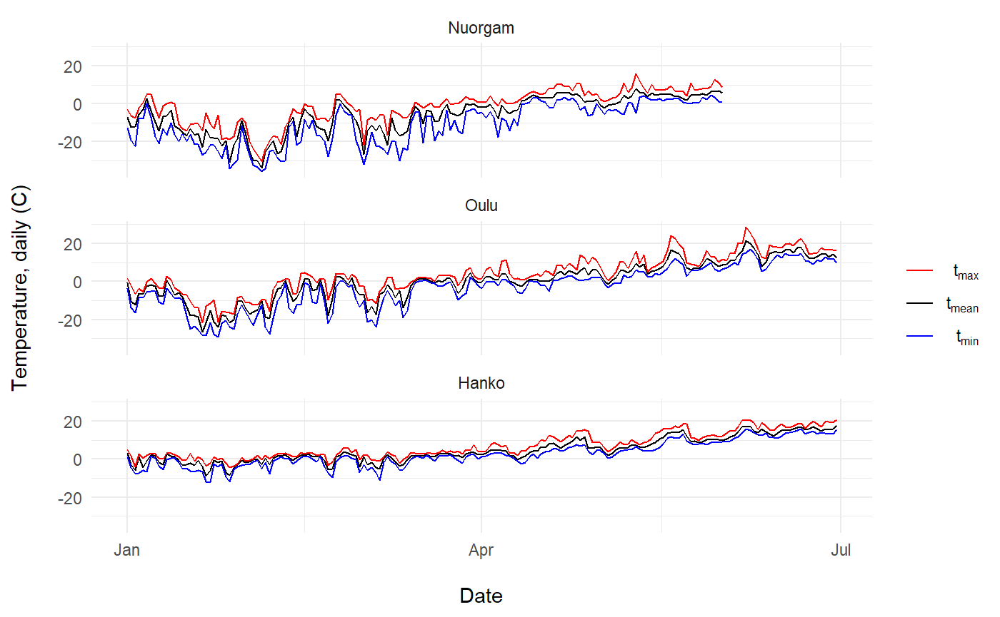
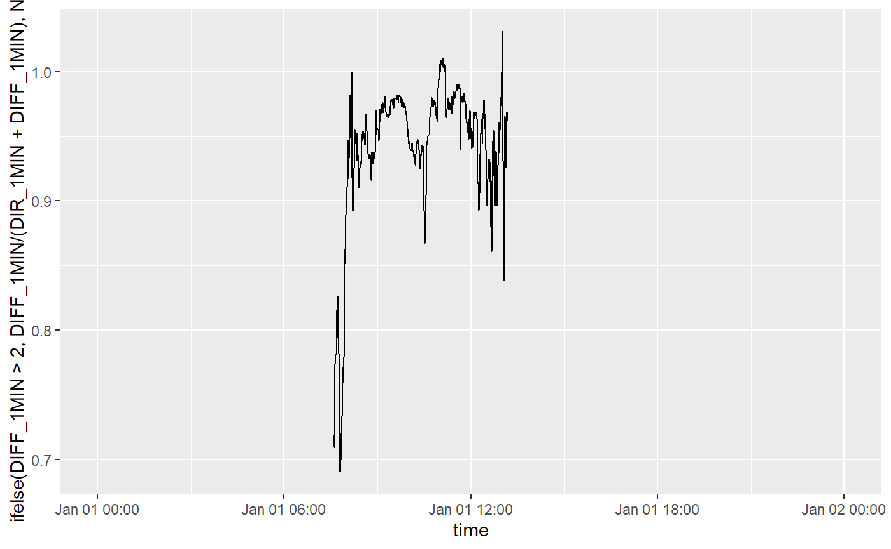
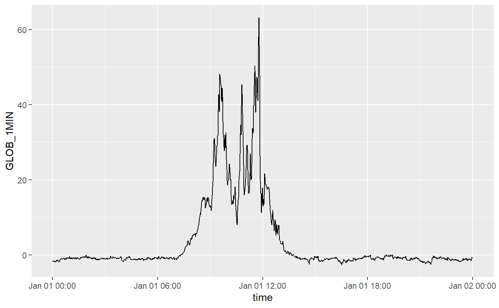

sunrad_weather_observation_data.Rmdfmi2 is not yet in CRAN, so you’ll need to install it directly from GitHub. While you’re at it, make sure you also install all the packages below as we’ll be using them in this tutorial.
You can retrieve weather state observation data with various temporal resolutions using fmi2. First thing you need to know is of course which location exactly you want to get the data for.
The FMI API provides multiple ways of defining the spatial query area:
We’ll start off by using the unique FMISID identifiers assigned to the FMI observation stations. The online table is also available in fmi2 using the function fmi_stations():
station_data <- fmi2::fmi_stations()
#> Station list downloaded from http://en.ilmatieteenlaitos.fi/observation-stations
station_data
#> # A tibble: 457 x 9
#> Name FMISID LPNN WMO Lat Lon Elevation Groups Started
#> <chr> <int> <int> <int> <dbl> <dbl> <int> <chr> <int>
#> 1 Äänekoski Hiski 103151 NA NA 62.6 25.7 110 Air quality~ 2004
#> 2 Äänekoski Kala~ 101541 3405 NA 62.9 25.9 107 Precipitati~ 1956
#> 3 Ähtäri Inha 101520 3301 2924 62.6 24.1 161 Weather 1912
#> 4 Alajärvi Möksy 101533 3314 2787 63.1 24.3 171 Weather 1957
#> 5 Alavus Sulkava~ 101305 2213 NA 62.4 23.6 124 Precipitati~ 1942
#> 6 Asikkala Pulkk~ 101185 1434 2727 61.3 25.5 79 Weather 1991
#> 7 Bay of Bothnia~ 137228 NA NA 64.7 23.2 0 Buoy 2012
#> 8 Enonkoski Sima~ 101446 2806 NA 62.1 29.0 95 Precipitati~ 1937
#> 9 Enontekiö airp~ 101976 8208 2802 68.4 23.4 308 Weather 1999
#> 10 Enontekiö Kaar~ 101968 8102 NA 68.4 22.5 320 Precipitati~ 1953
#> # ... with 447 more rowsSome examples of how to find the station of interest. First by partial name match and partial match to available data Group. We for a station in Helsinki with precipitation data.
station_data %>%
dplyr::filter(grepl("Helsinki", Name) & grepl("Precipitation", Groups))
#> # A tibble: 1 x 9
#> Name FMISID LPNN WMO Lat Lon Elevation Groups Started
#> <chr> <int> <int> <int> <dbl> <dbl> <int> <chr> <int>
#> 1 Helsinki ~ 101004 339 2998 60.2 25.0 24 Air quality, Prec~ 2005Stations with WMO code assigned.
station_data %>%
dplyr::filter(!is.na(WMO))
#> # A tibble: 209 x 9
#> Name FMISID LPNN WMO Lat Lon Elevation Groups Started
#> <chr> <int> <int> <int> <dbl> <dbl> <int> <chr> <int>
#> 1 Ähtäri Inha 101520 3301 2924 62.6 24.1 161 Weather 1912
#> 2 Alajärvi Möksy 101533 3314 2787 63.1 24.3 171 Weather 1957
#> 3 Asikkala Pulkk~ 101185 1434 2727 61.3 25.5 79 Weather 1991
#> 4 Enontekiö airp~ 101976 8208 2802 68.4 23.4 308 Weather 1999
#> 5 Enontekiö Kilp~ 102016 9003 2801 69.0 20.8 480 Precipitati~ 1978
#> 6 Enontekiö Kilp~ 102017 9004 2701 69.0 20.8 1002 Weather 1991
#> 7 Enontekiö Näkk~ 102019 9201 2726 68.6 23.6 374 Weather 1960
#> 8 Espoo Kivenlah~ 101000 334 2838 60.2 24.6 44 Mast 1989
#> 9 Espoo Nuuksio 852678 344 2986 60.3 24.6 90 Weather 2014
#> 10 Espoo Tapiola 874863 342 2985 60.2 24.8 6 Weather 2013
#> # ... with 199 more rowsFind longest series.
station_data %>%
dplyr::arrange(Started) %>%
dplyr::slice(1)
#> # A tibble: 1 x 9
#> Name FMISID LPNN WMO Lat Lon Elevation Groups Started
#> <chr> <int> <int> <int> <dbl> <dbl> <int> <chr> <int>
#> 1 Helsinki Kaisaniemi 100971 304 2978 60.2 24.9 3 Weather 1844Arrange stations from North to South.
station_data %>%
dplyr::arrange(-Lat)
#> # A tibble: 457 x 9
#> Name FMISID LPNN WMO Lat Lon Elevation Groups Started
#> <chr> <int> <int> <int> <dbl> <dbl> <int> <chr> <int>
#> 1 Utsjoki Nuorgam 102036 9604 2825 70.1 27.9 22 Weather 1929
#> 2 Utsjoki Kevo 102035 9603 2805 69.8 27.0 107 Air quality~ 1962
#> 3 Utsjoki Kevo K~ 126737 9618 2890 69.8 27.0 76 Weather 2010
#> 4 Inari Kirakkaj~ 102055 9708 2858 69.6 28.9 106 Weather 2009
#> 5 Inari Kaamanen 102047 9616 2702 69.1 27.3 156 Weather 2008
#> 6 Inari Väylä 102042 9611 2827 69.1 27.5 123 Weather 1990
#> 7 Enontekiö Kilp~ 102016 9003 2801 69.0 20.8 480 Precipitati~ 1978
#> 8 Inari Seitalaa~ 129963 9617 2888 69.0 27.8 120 Weather 2011
#> 9 Enontekiö Kilp~ 102017 9004 2701 69.0 20.8 1002 Weather 1991
#> 10 Inari parish 102046 9615 NA 68.9 27.0 127 Precipitati~ 2003
#> # ... with 447 more rowsThe three stations at highest elevation.
station_data %>%
dplyr::arrange(-Elevation) %>%
dplyr::slice(1:3)
#> # A tibble: 3 x 9
#> Name FMISID LPNN WMO Lat Lon Elevation Groups Started
#> <chr> <int> <int> <int> <dbl> <dbl> <int> <chr> <int>
#> 1 Enontekiö Kilpi~ 102017 9004 2701 69.0 20.8 1002 Weather 1991
#> 2 Muonio Laukukero 101982 8307 2820 68.1 24.0 760 Weather 1996
#> 3 Muonio Sammaltu~ 101983 8308 2821 68.0 24.1 555 Air quality~ 1991Select by range of latitude.
station_data %>%
dplyr::filter(dplyr::between(Lat, 60, 60.1))
#> # A tibble: 5 x 9
#> Name FMISID LPNN WMO Lat Lon Elevation Groups Started
#> <chr> <int> <int> <int> <dbl> <dbl> <int> <chr> <int>
#> 1 Espoo Kytö 654910 NA NA 60.1 24.7 0 Buoy 2013
#> 2 Föglö Degerby 134252 NA NA 60.0 20.4 0 Mareograph 1923
#> 3 Mariehamn Öste~ 105404 NA NA 60.1 19.9 2 Air quality ~ 2018
#> 4 Mariehamn West~ 151029 26 2997 60.1 19.9 2 Weather 2012
#> 5 Sipoo Itätoukki 105392 425 NA 60.1 25.2 5 Weather 2017We’re going to pick “Hanko Tulliniemi” as an example here and use its FMISID (100946) to retrieve the data. As you can see from the table above, it also provides the Lat Lon (geographical) coordinates for the observation station. Before we get the actual data, let’s visualize Hanko region.
# Get data for Tulliniemi only
tulliniemi_station <- station_data %>%
dplyr::filter(FMISID == 100946)
# Plot on a map using leaflet
leaflet::leaflet(station_data) %>%
leaflet::setView(lng = tulliniemi_station$Lon,
lat = tulliniemi_station$Lat,
zoom = 11) %>%
leaflet::addTiles() %>%
leaflet::addMarkers(~Lon, ~Lat, popup = ~Name, label = ~as.character(FMISID))Now that we know how the id for a specific observation station, we can proceed to getting the actual data. fmi2 provides several functions for retrieving data with different variables and temporal resolution. We’ll start with obs_weather_daily() which returns daily average observation data from a given location. Let’s get the daily weather observation data for the first 6 monhts of 2019:
# Use Hanko Tulliniemi weather station FMISID
tulliniemi_data <- obs_weather_daily(starttime = "2019-01-01",
endtime = "2019-06-30",
fmisid = 100946)In total, the function returned 1086 observations. You can also note the following:
which means that the data returned by obs_weather_daily() is a spatial sf object with the geometry column storing the geographical information of the weather station. We’ll come back to this later. Now we are interested in what kind of data did we actually get? Let’s find out:
So there are six variables with their corresponding values. fmi2 provides a helper function describe_variables() that can be useful in finding out more about the variables:
fmi2::describe_variables(tulliniemi_data$variable)
#> # A tibble: 6 x 6
#> variable label base_phenomenon unit stat_function agg_period
#> <chr> <chr> <chr> <chr> <chr> <chr>
#> 1 rrday Precipitation ~ Amount of precipit~ mm sum PT24H
#> 2 tday Air temperature Temperature degC avg P1D
#> 3 snow Snow depth Snow cover cm instant P1D
#> 4 tmin Minimum temper~ Temperature degC min PT24H
#> 5 tmax Maximum temper~ Temperature degC max PT24H
#> 6 TG_PT12H_m~ Ground minimum~ Temperature degC min PT12Hobs_weather_daily() returns data in so called long (or melted) format meaning that all variable (i.e. parameter) names are contained in column variable and corresponding values in value column. You can transform the data into a wide format using tidyr:
wide_data <- tulliniemi_data %>%
tidyr::spread(variable, value) %>%
# Let's convert the sf object into a regular tibble
sf::st_set_geometry(NULL) %>%
tibble::as_tibble()
class(wide_data)
#> [1] "tbl_df" "tbl" "data.frame"
wide_data
#> # A tibble: 181 x 7
#> time rrday snow tday TG_PT12H_min tmax tmin
#> <dttm> <dbl> <dbl> <dbl> <dbl> <dbl> <dbl>
#> 1 2019-01-01 00:00:00 NA NA 3.2 NA 5 1.2
#> 2 2019-01-02 00:00:00 NA NA -2.8 NA 1.5 -4.3
#> 3 2019-01-03 00:00:00 NA NA -6 NA -4.1 -7.6
#> 4 2019-01-04 00:00:00 NA NA 1.3 NA 2.7 -7.4
#> 5 2019-01-05 00:00:00 NA NA -4.3 NA 0.6 -5.8
#> 6 2019-01-06 00:00:00 NA NA -1.1 NA 2.2 -6.5
#> 7 2019-01-07 00:00:00 NA NA 2.4 NA 3 1.6
#> 8 2019-01-08 00:00:00 NA NA 1.6 NA 2.9 0.5
#> 9 2019-01-09 00:00:00 NA NA -1.7 NA 0.6 -3.7
#> 10 2019-01-10 00:00:00 NA NA -2.7 NA 0 -5.6
#> # ... with 171 more rowsLooks like there aren’t many observations in the data for rrday, snow or TG_PT12H_min. Let’s have a closer look at the data stored in wide_data:
| Name | wide_data |
| Number of rows | 181 |
| Number of columns | 7 |
| _______________________ | |
| Column type frequency: | |
| numeric | 6 |
| POSIXct | 1 |
| ________________________ | |
| Group variables | None |
Variable type: numeric
| skim_variable | n_missing | complete_rate | mean | sd | p0 | p25 | p50 | p75 | p100 | hist |
|---|---|---|---|---|---|---|---|---|---|---|
| rrday | 181 | 0 | NaN | NaN | NA | NA | NA | NA | NA | |
| snow | 181 | 0 | NaN | NaN | NA | NA | NA | NA | NA | |
| tday | 0 | 1 | 4.74 | 6.46 | -9.0 | 0.6 | 2.8 | 9.7 | 17.9 | ▂▇▇▃▅ |
| TG_PT12H_min | 181 | 0 | NaN | NaN | NA | NA | NA | NA | NA | |
| tmax | 0 | 1 | 7.14 | 6.74 | -4.4 | 2.2 | 4.5 | 12.5 | 20.8 | ▃▇▃▃▃ |
| tmin | 0 | 1 | 2.65 | 6.66 | -12.3 | -1.8 | 1.6 | 7.6 | 15.9 | ▂▅▇▃▃ |
Variable type: POSIXct
| skim_variable | n_missing | complete_rate | min | max | median | n_unique |
|---|---|---|---|---|---|---|
| time | 0 | 1 | 2019-01-01 | 2019-06-30 | 2019-04-01 | 181 |
Seems like the above mentioned variables indeed don’t have data between the defined days. Let’s get the same data from a couple of other observation stations around finland. Note that this time we’re using place name instead of a FMISID.
oulu_data <- obs_weather_daily(starttime = "2019-01-01",
endtime = "2019-06-30",
place = "Oulu")
nuorgam_data <- obs_weather_daily(starttime = "2019-01-01",
endtime = "2019-06-30",
place = "Nuorgam")
# Add location name to each data set and combine them
oulu_data$location <- "Oulu"
nuorgam_data$location <- "Nuorgam"
tulliniemi_data$location <- "Hanko"
all_data <- rbind(tulliniemi_data, oulu_data, nuorgam_data)
# Factorize location and make order explicit
all_data <- all_data %>%
dplyr::mutate(location = factor(location,
levels = c("Nuorgam", "Oulu", "Hanko"),
ordered = TRUE))Let’s plot the daily temperature data for the different locations:
all_data %>%
dplyr::filter(variable %in% c("tday", "tmax", "tmin")) %>%
ggplot(aes(x = time, y = value, color = variable)) +
geom_line() +
scale_color_manual(name = "",
values = c(tmax = "red", tday = "black", tmin = "blue"),
breaks = c("tmax", "tday", "tmin"),
labels = c(tmax = expression(t[max]),
tday = expression(t[mean]),
tmin = expression(t[min]))) +
facet_wrap(~ location, ncol=1) +
ylab("Temperature, daily (C)\n") +
xlab("\nDate") + theme_minimal()
In addition to daily values, it is also possible to retrieve weather observation data with finer temporal resolution, such as hourly data, using the function obs_weather_hourly(). The data retrieved this has slightly different content as compared to the daily data:
# Get the hourly observations for the first day of February 2019 in Hanko Tulliniemi
tulliniemi_data_hour <- fmi2::obs_weather_hourly(starttime = "2019-06-21",
endtime = "2019-06-22",
fmisid = 100946)Again, let’s first have a look at what we actually got:
fmi2::describe_variables(tulliniemi_data_hour$variable)
#> # A tibble: 12 x 6
#> variable label base_phenomenon unit stat_function agg_period
#> <chr> <chr> <chr> <chr> <chr> <chr>
#> 1 TA_PT1H_AVG Air temperature Temperature degC avg PT1H
#> 2 TA_PT1H_MAX Highest temper~ Temperature degC max PT1H
#> 3 TA_PT1H_MIN Lowest tempera~ Temperature degC min PT1H
#> 4 RH_PT1H_AVG Relative humid~ Humidity % avg PT1H
#> 5 WS_PT1H_AVG Wind speed Wind m/s avg PT1H
#> 6 WS_PT1H_MAX Maximum wind s~ Wind m/s max PT1H
#> 7 WS_PT1H_MIN Minimum wind s~ Wind m/s min PT1H
#> 8 WD_PT1H_AVG Wind direction Wind deg avg PT1H
#> 9 PRA_PT1H_A~ Precipitation ~ Amount of precipi~ mm acc PT1H
#> 10 PRI_PT1H_M~ Maximum precip~ Amount of precipi~ mm/h max PT1H
#> 11 PA_PT1H_AVG Air pressure Air pressure hPa avg PT1H
#> 12 WAWA_PT1H_~ Present weathe~ Weather <NA> rank PT1Htulliniemi_data_hour %>%
tidyr::spread(variable, value) %>%
# Let's convert the sf object into a regular tibble
sf::st_set_geometry(NULL) %>%
tibble::as_tibble()
#> # A tibble: 25 x 13
#> time PA_PT1H_AVG PRA_PT1H_ACC PRI_PT1H_MAX RH_PT1H_AVG
#> <dttm> <dbl> <dbl> <dbl> <dbl>
#> 1 2019-06-21 00:00:00 1008. NA NA 88
#> 2 2019-06-21 01:00:00 1008 NA NA 90
#> 3 2019-06-21 02:00:00 1008 NA NA 94
#> 4 2019-06-21 03:00:00 1008. NA NA 96
#> 5 2019-06-21 04:00:00 1008. NA NA 96
#> 6 2019-06-21 05:00:00 1008. NA NA 96
#> 7 2019-06-21 06:00:00 1008. NA NA 95
#> 8 2019-06-21 07:00:00 1008. NA NA 94
#> 9 2019-06-21 08:00:00 1009. NA NA 94
#> 10 2019-06-21 09:00:00 1009. NA NA 87
#> # ... with 15 more rows, and 8 more variables: TA_PT1H_AVG <dbl>,
#> # TA_PT1H_MAX <dbl>, TA_PT1H_MIN <dbl>, WAWA_PT1H_RANK <dbl>,
#> # WD_PT1H_AVG <dbl>, WS_PT1H_AVG <dbl>, WS_PT1H_MAX <dbl>, WS_PT1H_MIN <dbl>tulliniemi_data_month <- fmi2::obs_weather_monthly(starttime = "2018-01-01",
endtime = "2018-12-31",
fmisid = 100946)fmi2::describe_variables(tulliniemi_data_month$variable)
#> # A tibble: 2 x 6
#> variable label base_phenomenon unit stat_function agg_period
#> <chr> <chr> <chr> <chr> <chr> <chr>
#> 1 rrmon Monthly precipita~ Amount of precipit~ mm sum P1M
#> 2 tmon Monthly mean temp~ Temperature degC avg P1Mtulliniemi_data_month %>%
tidyr::spread(variable, value) %>%
# Let's convert the sf object into a regular tibble
sf::st_set_geometry(NULL) %>%
tibble::as_tibble()
#> # A tibble: 12 x 3
#> time rrmon tmon
#> <dttm> <dbl> <dbl>
#> 1 2018-01-01 00:00:00 NA -0.3
#> 2 2018-02-01 00:00:00 NA -5.6
#> 3 2018-03-01 00:00:00 NA -3.2
#> 4 2018-04-01 00:00:00 NA 3.4
#> 5 2018-05-01 00:00:00 NA 12.6
#> 6 2018-06-01 00:00:00 NA 14
#> 7 2018-07-01 00:00:00 NA 20.3
#> 8 2018-08-01 00:00:00 NA 18.6
#> 9 2018-09-01 00:00:00 NA 14.3
#> 10 2018-10-01 00:00:00 NA 8.6
#> 11 2018-11-01 00:00:00 NA 5.1
#> 12 2018-12-01 00:00:00 NA 0.6Now that we know how the id for a specific observation station, we can proceed to getting the actual data. fmi2 provides several functions for retrieving data with different variables and temporal resolution. We’ll start with obs_weather_daily() which returns daily average observation data from a given location. Let’s get the daily weather observation data for the first 6 monhts of 2019:
# Use Kumpula station FMISID
kumpula_sun_data <- obs_sunrad_minute(starttime = "2019-01-01",
endtime = "2019-01-02",
fmisid = 101004)In total, the function returned 1086 observations. You can also note the following:
which means that the data returned by obs_weather_daily() is a spatial sf object with the geometry column storing the geographical information of the weather station. We’ll come back to this later. Now we are interested in what kind of data did we actually get? Let’s find out:
unique(kumpula_sun_data$variable)
#> [1] "LWIN_1MIN" "LWOUT_1MIN" "GLOB_1MIN" "DIR_1MIN" "REFL_1MIN"
#> [6] "SUND_1MIN" "DIFF_1MIN" "NET_1MIN" "UVB_U"fmi2::describe_variables(kumpula_sun_data$variable)
#> # A tibble: 9 x 6
#> variable label base_phenomenon unit stat_function agg_period
#> <chr> <chr> <chr> <chr> <chr> <chr>
#> 1 LWIN_1MIN "Long wave solar r~ UV radiation W/m2 avg PT1M
#> 2 LWOUT_1MIN Long wave outgoing~ UV radiation W/m2 avg PT1M
#> 3 GLOB_1MIN Global radiation Solar radiation W/m2 avg PT1M
#> 4 DIR_1MIN Direct solar radia~ Solar radiation W/m2 avg PT1M
#> 5 REFL_1MIN Reflected radiation Solar radiation W/m2 avg PT1M
#> 6 SUND_1MIN Sunshine duration Sunshine durati~ s acc PT1M
#> 7 DIFF_1MIN Diffuse radiation Solar radiation W/m2 avg PT1M
#> 8 NET_1MIN Radiation balance Solar radiation W/m2 avg PT1M
#> 9 UVB_U Ultraviolet irradi~ UV radiation index avg PT1Mwide_sun_data <- kumpula_sun_data %>%
tidyr::spread(variable, value) %>%
# Let's convert the sf object into a regular tibble
sf::st_set_geometry(NULL) %>%
tibble::as_tibble()
wide_sun_data
#> # A tibble: 1,441 x 10
#> time DIFF_1MIN DIR_1MIN GLOB_1MIN LWIN_1MIN LWOUT_1MIN
#> <dttm> <dbl> <dbl> <dbl> <dbl> <dbl>
#> 1 2019-01-01 00:00:00 -1.2 0.9 -1.7 316. NA
#> 2 2019-01-01 00:01:00 -1.4 0.9 -1.6 316. NA
#> 3 2019-01-01 00:02:00 -1.3 0.8 -1.6 317. NA
#> 4 2019-01-01 00:03:00 -1.2 0.9 -1.5 316. NA
#> 5 2019-01-01 00:04:00 -1.2 1 -1.6 317. NA
#> 6 2019-01-01 00:05:00 -1.4 0.9 -1.6 316. NA
#> 7 2019-01-01 00:06:00 -1.4 1.1 -1.8 317. NA
#> 8 2019-01-01 00:07:00 -1.4 0.9 -1.7 317. NA
#> 9 2019-01-01 00:08:00 -1.4 0.8 -1.7 317. NA
#> 10 2019-01-01 00:09:00 -1.7 0.4 -1.9 317. NA
#> # ... with 1,431 more rows, and 4 more variables: NET_1MIN <dbl>,
#> # REFL_1MIN <dbl>, SUND_1MIN <dbl>, UVB_U <dbl>ggplot(wide_sun_data, aes(time, ifelse(DIFF_1MIN > 2, DIFF_1MIN / (DIR_1MIN + DIFF_1MIN), NA))) +
geom_line()
#> Warning: Removed 1105 rows containing missing values (geom_path).

For finding stored queries available from the server we first need to download the whole list of stored queries.
api_obj <- fmi_api("DescribeStoredQueries")
nodes <- api_obj$content
unlist(purrr::map(nodes, xml2::xml_attrs)) -> stored.query.idsIf we are not sure what is the exact id, we can search partial matches. For example "radiation" is used for sun radiation in the "fmi" queries but for other radiation in the "stuk" queries.
stored.query.ids[grepl("radiation", stored.query.ids) &
grepl("fmi", stored.query.ids)]
#> id
#> "fmi::observations::radiation::multipointcoverage"
#> id
#> "fmi::observations::radiation::simple"
#> id
#> "fmi::observations::radiation::timevaluepair"list_parameters("fmi::observations::radiation::simple")
#> # A tibble: 7 x 4
#> param_name param_type param_title param_abstract
#> <chr> <chr> <chr> <chr>
#> 1 starttime dateTime Begin of the time i~ Parameter begin specifies the beg~
#> 2 endtime dateTime End of time interval End of time interval in ISO-forma~
#> 3 timestep int The time step of da~ The time step of data in minutes.~
#> 4 parameters NameList Parameters to return Comma separated list of meteorolo~
#> 5 crs xsi:string Coordinate projecti~ Coordinate projection to use in r~
#> 6 fmisid int FMI observation sta~ Identifier of the observation sta~
#> 7 maxlocatio~ int Amount of locations How many observation stations are~list_parameters("fmi::observations::radiation::timevaluepair")
#> # A tibble: 8 x 4
#> param_name param_type param_title param_abstract
#> <chr> <chr> <chr> <chr>
#> 1 starttime dateTime Begin of the time i~ Parameter begin specifies the beg~
#> 2 endtime dateTime End of time interval End of time interval in ISO-forma~
#> 3 timestep int The time step of da~ The time step of data in minutes.~
#> 4 parameters NameList Parameters to return Comma separated list of meteorolo~
#> 5 crs xsi:string Coordinate projecti~ Coordinate projection to use in r~
#> 6 maxlocatio~ int Amount of locations How many observation stations are~
#> 7 fmisid int FMI observation sta~ Identifier of the observation sta~
#> 8 timezone xsi:string Time zone Time zone of the time instant of ~list_parameters("fmi::observations::radiation::multipointcoverage")
#> # A tibble: 7 x 4
#> param_name param_type param_title param_abstract
#> <chr> <chr> <chr> <chr>
#> 1 starttime dateTime Begin of the time i~ Parameter begin specifies the beg~
#> 2 endtime dateTime End of time interval End of time interval in ISO-forma~
#> 3 timestep int The time step of da~ The time step of data in minutes.~
#> 4 parameters NameList Parameters to return Comma separated list of meteorolo~
#> 5 crs xsi:string Coordinate projecti~ Coordinate projection to use in r~
#> 6 fmisid int FMI observation sta~ Identifier of the observation sta~
#> 7 maxlocatio~ int Amount of locations How many observation stations are~stored.query.ids[grepl("stuk::", stored.query.ids)]
#> id
#> "stuk::observations::air::radionuclide-activity-concentration::latest::multipointcoverage"
#> id
#> "stuk::observations::air::radionuclide-activity-concentration::latest::simple"
#> id
#> "stuk::observations::air::radionuclide-activity-concentration::multipointcoverage"
#> id
#> "stuk::observations::external-radiation::latest::multipointcoverage"
#> id
#> "stuk::observations::external-radiation::latest::simple"
#> id
#> "stuk::observations::external-radiation::multipointcoverage"stored.query.ids[grepl("::simple", stored.query.ids)]
#> id
#> "fmi::forecast::harmonie::hybrid::point::simple"
#> id
#> "fmi::forecast::harmonie::pressure::point::simple"
#> id
#> "fmi::forecast::harmonie::surface::point::simple"
#> id
#> "fmi::forecast::hbm::point::simple"
#> id
#> "fmi::forecast::hirlam::surface::cities::simple"
#> id
#> "fmi::forecast::hirlam::surface::obsstations::simple"
#> id
#> "fmi::forecast::hirlam::surface::point::simple"
#> id
#> "fmi::forecast::oaas::sealevel::point::simple"
#> id
#> "fmi::forecast::silam::airquality::surface::point::simple"
#> id
#> "fmi::forecast::wam::point::simple"
#> id
#> "fmi::observations::airquality::hourly::simple"
#> id
#> "fmi::observations::lightning::simple"
#> id
#> "fmi::observations::mareograph::daily::simple"
#> id
#> "fmi::observations::mareograph::instant::simple"
#> id
#> "fmi::observations::mareograph::monthly::simple"
#> id
#> "fmi::observations::mareograph::simple"
#> id
#> "fmi::observations::radiation::simple"
#> id
#> "fmi::observations::soil::hourly::simple"
#> id
#> "fmi::observations::wave::simple"
#> id
#> "fmi::observations::weather::cities::simple"
#> id
#> "fmi::observations::weather::daily::simple"
#> id
#> "fmi::observations::weather::hourly::simple"
#> id
#> "fmi::observations::weather::monthly::30year::simple"
#> id
#> "fmi::observations::weather::monthly::simple"
#> id
#> "fmi::observations::weather::simple"
#> id
#> "fmi::observations::weather::yearly::30year::simple"
#> id
#> "livi::observations::road::default::simple"
#> id
#> "livi::observations::road::finland::simple"
#> id
#> "livi::observations::road::simple"
#> id
#> "stuk::observations::air::radionuclide-activity-concentration::latest::simple"
#> id
#> "stuk::observations::external-radiation::latest::simple"
#> id
#> "urban::observations::airquality::hourly::simple"list_parameters("fmi::observations::weather::cities::simple")
#> # A tibble: 4 x 4
#> param_name param_type param_title param_abstract
#> <chr> <chr> <chr> <chr>
#> 1 starttime xsi:dateTime Begin of the ti~ Parameter starttime specifies the ~
#> 2 endtime xsi:dateTime End of time int~ Parameter endtime specifies the en~
#> 3 parameters gml:NameList Parameters to r~ Comma separated list of meteorolog~
#> 4 timestep xsi:unsignedI~ The time step i~ The time step of data in minutes. ~